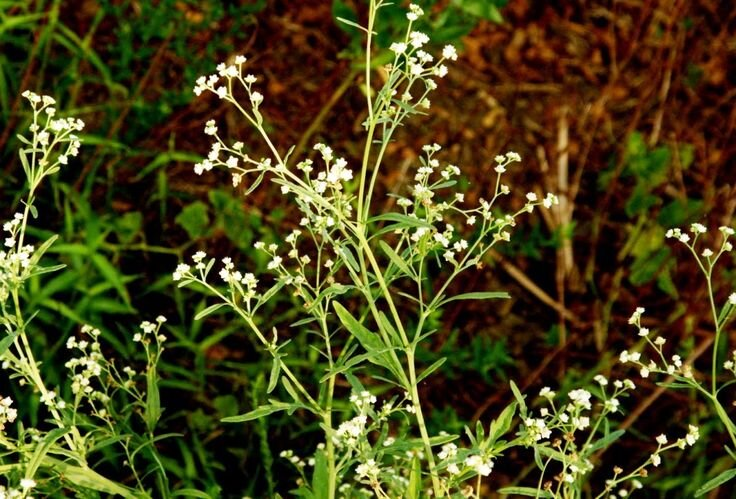

The silent intrusion: How Parthenium has taken over India

Imagine a hillside, sprinkled with plants dotted with luxuriantly growing white flowers, exuding a sense of purity. The sun is shining, the wind is blowing gently, the air is crisp. You've lived beside this hill your whole life, and nothing can beat a calming view like this.
But underneath the apparent perfection, behind the illusion of pristineness lies a horrifying and bitter truth: none of the white flowers belong there. Did you notice? Where is the lush grass you used to lay on in the evenings? Where are the bees that used to hover over the passionflower vines? They can barely be seen- not on that hill, not around the valley. Slowly, you realise these new white flowers are an infestation. They're tenacious invaders releasing toxins in the earth and poisoning insects that have evolved right there around that hill for a long, long time before these newcomers invaded their lands.
What is this noxious weed that has devastated the kaleidoscope of species that thrived here earlier? It is a global weed, and the Scrounge of India, Parthenium hysterophorus.
Also known as Gajar Ghas or Santa Maria feverfew, it is a herbaceous, flowering weed native to the American tropics but has since become an invasive species in East Asia, India, Australia, and parts of Africa. In India, it has become quite a notorious villain, adversely affecting crop yields, human and animal welfare, killing off native biodiversity, amongst many other concerns. How did it manage to conquer such vast distances over the earth and come to India in the first place?
It has a long history connected with colonialism, politics, food scarcity, and the very first prime minister of India. The earliest recorded mention of parthenium was in 1814 by a British botanist in the Royal Botanical Garden in Kolkata, but its explosion across the subcontinent was observed much later in the 1950s. The recently independent and partitioned India was facing severe food shortages due to droughts and population growth. The then Prime Minister Jawaharlal Nehru sought food aid from the US, and 2 million tons of wheat were imported.
Now, what's the problem with a country helping another out in a time of crisis? Well, this aid would go on to trigger the weed to infest millions of hectares of land across India over the course of the next decades. The surprising reality is that the wheat came adulterated with the native american parthenium which was instantly spread over the fertile soils here, perfect for the hungry and aggressive weed. The endless beat of its take-over is heard to this day.
So, how has it done so much damage over the decades after it declared this land as its playground?
First off, the most notable mention is that P. hysterophorus is an allelopathic plant, which means it produces growth-inhibiting chemicals that negatively affect the growth of other plants around it. It crowds out native Indian grasses, turning rich ecosystems into monoculture dead-zones where local wildlife can no longer find food. Amongst the many allelopathic chemicals that P. hysterophorus releases, parthenin is the most responsible for plant growth inhibition, which is also a severe irritant and allergen to humans and livestock. If cattle graze on it, it causes mouth ulcers, reduces milk yield, and can even taint the milk bitter!
Meanwhile, its pollen is a major trigger for severe asthma, allergic rhinitis (hay fever), and respiratory issues in both urban and rural India.
Okay, that's quite the recipe for an environmental disaster! The first thought I had when I read about these complications was that after all, it's just a plant, and I wondered what made it so that it was capable of propagating itself at such a terrifying rate.
Turns out, parthenium is able to withstand drought, high salt concentrations, and alkaline clay soils that would be lethal to most plants, and it rapidly takes over most habitats making it difficult to remove once settled. The plants have an ability to uptake nutrients from depleted soil hence accumulating more nutrients in its leaves.
These devastating effects were noticed by people in the 1960s after an epidemic of Parthenium dermatitis (severe skin allergies) among farmers and field workers, and a sharp spike in nasal and respiratory allergies tied to the weed's pollen in major cities. In the 1970s, studies were published detailing how the weed was poisoning livestock, ruining milk quality, and actively choking out native Indian food crops using its toxic chemical defense mechanisms.
Many measures to suppress the plant's spread and attempts to wipe out its existing population are being made. Manual weeding, chemical herbicides and other methods have their own disadvantages, but a biological saviour Zygogramma bicolorata known as the Mexican beetle is capable of feeding on the plant parts completely leading to the death of the plants. Other tiny heroes that are helping scientists eliminate local infestations of parthenium include Stem-galling moth, Stem-boring weevil and a few fungi. Also, growing certain fodder species of plants has shown to suppress the growth of P. hysterophorus by outcompeting the weed.
Remember that hill from earlier? You probably realise by now that all that is green is not good. The vegetation that we let take over swathes of land should benefit the ecosystem and not metaphorically be a parasite to the land that needs it.
Ultimately, the truth is that notorious weeds like parthenium are affecting all of us in this country and beyond. What should be our way forward from this place of desolation and loss of control? The need of the hour is to spread awareness on the topic of invasive plants in both urban and rural areas and to help indigenous communities actively clear infested areas and farmlands to save the fragile ecosystem, biodiversity and soil fertility. Parthenium Awareness Week is conducted in the month of August 16-22 every year in multiple institutes across the country to motivate the public for eradication and management programmes.
We highly encourage the readers to spend a short amount of time educating themselves further on the topic of invasive plants that pose a significant threat to our country, especially their own cities and districts. Try to uproot a few parthenium plants you may spot around your house or on the side of the road you walk across everyday. Do spread awareness about the effects of such infestations to your peers. Once more people get to know about the ground level (pun not intended!) challenges our country is facing, they'll be able to directly influence how changes are implemented and drive authorities to take necessary action.